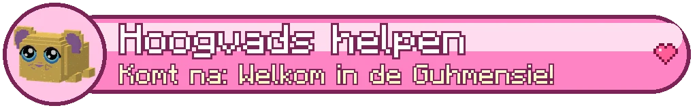

Hoogvads zone 5
AreasGebieden
| AreaGebied | Level | SecretsGeheimen | CampfiresKampvuren |
|---|---|---|---|
| De Proefarena | 56-57 | ||
| De Paleisheuvel ⚑ | 56-60 | 2 | 1 |
| De Universiteit ⚑ | 56-60 | 1 | |
| De Academie van de Wolkwacht ⚑ | 56-60 | 1 | 1 |
| De Marktlaan ⚑ | 56-60 | 1 | |
| De Ordekathedraal ⚑ | 56-60 | 2 | 1 |
| De Luchthaven ⚑ | 56-60 | 1 | 1 |
| Het Staartpark ⚑ | 56-60 | 1 | |
| De Ooggaarde ⚑ | 56-60 | 2 | 1 |
| Hoogvads ⚑ | 56-60 | 1 | |
| De Buikgangen | 57-59 | ||
| De Wolkwaldroom | 58-60 | ||
| Het Schuilnest | 58-60 | ||
| De Wolkrand (zuid) | 58-60 | ||
| De Wolkrand (noord) | 58-60 | ||
| De Staartvlakte | 58-60 | ||
| De Droom van Moeder Wolkwal | 60-60 |
BossesBazen


CreaturesWezens
Bezeten Oefenpop, Sparringridder, Grauwe Pluismijt, Mika-saboteur, Grauwe Wolkduivel, Mika-harpoenier, Mika-lontlegger, Mistslier, Vermomde Mika
Main storyHoofdverhaal
- De Zwevende Stad lv 55
- Verraad in de stad lv 56
- De mol in de Wolkwacht lv 56
- Soep en geruchten lv 57
- Wie vertrekt er stiekem? lv 57
- De laatste twee verhoren lv 58
- Het bewijsbord lv 58
- De Wolkwaldroom lv 59
- Het slaaplied van Moeder Wolkwal lv 59
- Sterren in het oosten lv 60
Side questsZijquests
- De hoogste titel van de Knuffelridder Class trialKlassenproef
- De hoogste titel van de Pluisjager Class trialKlassenproef
- De hoogste titel van de Vadsmagiër Class trialKlassenproef
- Een kom voor iedereen Side questZijquest
- Pluisje's knuffel Side questZijquest
- Brieven naar huis Side questZijquest
- Het Oog meten Side questZijquest
- De adem van Moeder Wolkwal Side questZijquest
- Proef van de Wolkwacht: het Wolkenparcours Side questZijquest
- Proef van de Wolkwacht: de verdwaalde kadet Side questZijquest
- Marktdrukte Side questZijquest
- Water voor het Staartpark Side questZijquest
- De kroon van wol Side questZijquest
- Het lied van de Eerste Knuffel Side questZijquest
Sets
This zone is hidden by your spoiler setting (top right).Deze zone is verborgen door je spoilerinstelling (rechtsboven).